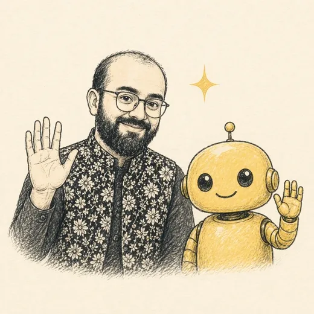

Nine products.One year.A lot of thinking out loud.
Eight years working on systems in banking and insurance. In 2026, I started building products. These are nine stories about the problems I found, the decisions I made, and what happened when I shipped.
Narrated in my cloned voice, generated with Speechify. Nine memos, about 7.5 minutes.
February to November
Wispr Flow Insights · Snapshot captured 4 Nov 2026
I don't just use voice. I work in it.
Voice has become part of how I think, plan, build, write, and get work done. This portfolio is one more thing I made by starting with a conversation.
93 words per minute puts me in the top 4% of Wispr Flow users for speed.
The original Insights cards · tap to view


69,803 words dictated. 36 days of showing up. And nine products built along the way.

Memo 10 · Recording
Memo 10 is yours.
I like finding the point where a messy human problem becomes a clear product decision. I talk to users, challenge the first solution, build quickly, and look for the number that tells me whether it worked. If there's a problem worth solving, or a growth experiment worth running, I want to hear about it.